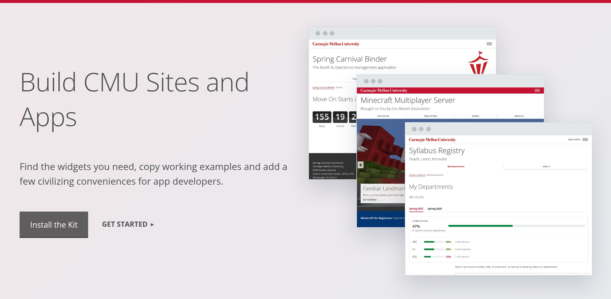

Conventions
How to write and structure pages built on CMU's template and the kit: wording, headings, links, images and accessibility.
AP Style
Follow The Associated Press Stylebook for grammar, punctuation, numbers and dates. CMU names AP style as its preferred standard in its Brand Standards writing guide. The kit's docs follow it too. The rules that come up most on web pages:
- No comma before the last item in a simple series: "red, white and blue." Add one only when the sentence would be unclear without it.
- Dates: Abbreviate the month with a date, "Jan. 11," but not alone or with only a year: "January 2027." Spell out March, April, May, June and July. Ranges take a hyphen with no spaces: "Dec. 7-18," "2-3 p.m.," "2026-27."
- Times: "9 a.m.," "2:30 p.m.," "noon" and "midnight." Drop ":00."
- Numbers: spell out one through nine and use figures for 10 and up, except for measurements, percentages, ages, dates and times, which always take figures: "three columns," "a 768px screen."
-
Keep "a" with its noun. If a lone "a" would end a line, join it to
the next word with
, as ina camera. Don't use nonbreaking spaces to force whole sentences onto one line.
CMU Names and Terms
Follow the university's naming and capitalization guidance:
| When You're Writing About… | Use This Pattern |
|---|---|
| The university | Carnegie Mellon University on first reference; Carnegie Mellon or CMU after that. |
| An unfamiliar acronym | Environmental Health and Safety (EHS) on first reference; EHS after that. |
| Students and semesters | "First-year students can register in the fall semester." Keep both terms lowercase in prose. |
| Departments and subjects | "The Department of Physics offers courses for physics majors." Capitalize the formal name; lowercase the subject. |
| Signing in | "Sign In" on buttons and links, never "Log In"; in a sentence, "Sign in with your Andrew ID." |
Headings
- Capitalize the principal words, as AP does for the titles of works: headings, buttons, navigation and labels. That includes every word of four or more letters, such as "With" and "From," and the first and last word: "Upload Your Syllabus." Use sentence case for prose: "Upload your syllabus before classes start."
- Leave periods off headings and hero titles. Use normal punctuation in full sentences.
- Put the important words first. People read the first two or three words of a heading, link or list item and move on: "Syllabus Due Dates for Spring," not "Information About When Spring Syllabi Are Due."
- Choose heading levels by what they contain, never by how big they look, and don't skip a level. Screen reader users move through a page by its headings, so the headings alone should outline the page.
- Read the page as a task. Can someone scan the headings, find the main action and tell what happens after they select it?
Buttons and Links
The template gives buttons, calls to action and ordinary links different visual weight. Match that weight with words that say what happens next, starting with a verb and naming the task.
Too Vague
"Options," "Syllabus Upload" or "Learn More" makes people guess what comes next.
Ready to Use
"See the Options," "Upload Syllabus" or "Read the Instructor Guide."
A link goes somewhere; a button does something. Use a link (<a>)
even when it looks like a button, and a <button> for an action
even when it looks like a link: screen readers announce them differently, and the
keyboard works them differently. These examples lead to real kit pages:
The main action: a btn link, in Title Case. It can lead to a page on this site, your app, its sign-in or a request form in another system.
A next step on this site: a call to action (cta), in Title Case.
Put one at the end of the section, after the information that supports it.
Another site: an ordinary external link, in sentence
case. A link gets cta or external, never both.
- A button and a call to action side by side go in one paragraph, button first; the kit spaces them as in a hero.
- Buttons line up on the left, under what they act on, with the main one first. The one exception is the question card: back on the left, forward on the right.
- A thin rule goes over buttons that finish a whole box: a dialog, a framed panel or a question card. The kit draws it. Buttons loose in a page, such as a form's Submit or a call-to-action row, get no rule.
- Never write "click here." A link should make sense on its own, because people scan links and screen readers list them: "Read the Instructor Guide," not "Click here for the guide." Give links on the same page different words, so that list doesn't read "Read More, Read More, Read More."
-
Label special destinations. After a link that requires sign-in,
add
[login required]as plain text outside the link. After a file link, add its type, such as[PDF]. These labels tell people what to expect before they select it. -
Omit
[login required]when the link text already makes it clear, as in "Sign In to See Your Courses." Use only one label: a syllabus link gets[login required]when signed out and[PDF]when signed in.
Heroes
Say what the site or app does, then give it two next steps: a button for the main action and a "Get Started" call to action. That second link jumps to the first section below, also headed Get Started. Here's the pattern from the kit's home page:

The title names the purpose, the lead says who it's for and the button names the action. The screenshot shows what people can expect. Use the hero component to build your own.
Instructions
Write to the person doing the task, in the active voice: "Upload your syllabus," not "Syllabi may be uploaded by instructors." Name each control exactly as it appears on screen, and put steps in the order people follow them, one main action in each.
Hard to Follow
"Users should navigate to the appropriate course and utilize the queue functionality to submit a request for assistance."
Easy to Follow
- Sign in and select My Courses.
- Choose the course you need help with.
- Select Join the Queue and describe your question.
Don't point by color, shape or position alone: "Select Join the Queue," not "Click the red button on the right." People using a screen reader, a phone or a zoomed-in screen may not see it where you do. Say "select," not "click," since not everyone uses a mouse.
Messages
"An error occurred" leaves the reader stuck. An error message names the problem and offers a way forward; a success message confirms what changed. Say it in words, not just color: each of these sample flash messages starts with what happened, so it reads the same without the red or green.
Your syllabus wasn't uploaded. Choose a PDF file and try again.
Your syllabus was uploaded. Students can now find it in the course list.
Colors
Keep a site to one or two colors, and use each for the same job everywhere, such as red for every sign-in box. Color goes on whole bands and boxes, not on text, and the template sets its text color to match. Two tools do it: the template's color classes for bands and boxes, and the kit's color variables for your own stylesheet. A band can also take a background pattern, the globe or the plaid.
Color Classes
A color class goes on a sidebar box or on a whole grid; boxes inside a grid stay
white. Add invert for white text on every color except
grey and gold, which take dark text. Under each class is the brand color it is, from
brand.cmu.edu, or
"template" where cmu.edu uses its own shade, a little darker so white text on it stays
readable. See also the kit's color variables.
red, darkgrey, grey, blue,
teal, green, darkgreen, gold, and
the kit's cmu-lightgrey
Carnegie Red
template
Steel Gray
Blue Thread
template, near Teal Thread
template, near Green Thread
Hornbostel Teal
Gold Thread
kit, the code snippet gray
<div class="sidebar">
<div class="teal invert"> … </div>
</div>
<div class="grid column3 blue invert boxes"> … </div>Color Variables
Use these custom properties in your own stylesheet instead of copying the values, so every site moves together if they change. Each comes from one of three places:
- Brand: CMU's official colors, from brand.cmu.edu, such as Carnegie Red and the Tartan palette's threads.
- Template: the colors cmu.edu's template draws on the web. Some are brand colors exactly; others are a shade darker so text on them stays readable, such as its green, close to Green Thread. The template's own color classes are on the color classes.
- Kit: pale tints for backgrounds and dark shades for small text on them, such as the green of a "Syllabus Available" pill. They aren't brand colors: no brand color is pale enough for a background behind text, or dark enough for small text on a tint, in every hue. Use them only for those jobs, and a brand or template color for anything large, such as a band or a bar.
| Property | Value | Used for | Source |
|---|---|---|---|
--cmu-red |
#c41230 | Carnegie Red: accents, step numbers, active tabs, errors | Brand |
--cmu-ink |
#22262a | Body text on tinted backgrounds | Kit |
--cmu-muted |
#5b6670 | Secondary text, labels, captions | Kit |
--cmu-line |
#d9dde1 | Borders and rules | Kit |
--cmu-tint |
#f4f5f6 | Tinted panels: callouts, notes, the bulk bar | Kit |
--cmu-green, --cmu-green-tint |
#1d5a3a, #e3f1ea | Done, available, success: text on its tint. Darker than any brand green, so small text stays readable | Kit |
--cmu-green-fill |
#00853e |
Progress bars: the template's own green (its green bands), close to
CMU's Green Thread
|
Template |
--cmu-amber, --cmu-amber-tint |
#6b4d00, #fff4d6 | Waiting, missing (amber, not red: not an error) | Kit |
--cmu-gold |
#fdb515 | CMU's Gold Thread: the rule on a notice flash | Brand |
--cmu-gray, --cmu-gray-tint |
#4a535b, #eceef0 | Neutral, not applicable | Kit |
--cmu-red-tint |
#fdf2f3 | Error flash background | Kit |
--cmu-blue, --cmu-blue-tint |
#043673, #e9eff7 | Note callouts: the template's blue, on a kit tint | Template, Kit |
--cmu-link, --cmu-link-hover |
#941120, #f00 | Buttons that look like links: the template's link colors | Template |
Images
- Alt text describes what the picture shows, in a sentence or less, without "Image of" or "Photo of": screen readers already say it's an image. For a screenshot, describe what the reader should notice, not every detail.
-
A decorative image gets empty alt text (
alt=""), so screen readers skip it. A linked image's alt text says where the link goes. - Captions add what alt text doesn't: who's in the photo, where and when, and the credit. Don't repeat the caption in the alt text. See Photo Captions and Credits.
-
A photo set as a background, such as the template's
hero, gets
role="img"and anaria-labeldescribing it, since it has noalt. - Keep words out of images. Put them in the page, where they can be resized, translated and read aloud.
-
Videos need checked captions and a
titleon the frame. See Videos.
Accessibility
Under the university's Digital Accessibility Policy, CMU websites and web apps must meet WCAG 2.1 Level AA. The template and the kit's components give you a start; the words, headings, images and links are yours. The Digital Accessibility Office has guidance, training and help, and the CMU Web team's accessibility best practices cover Cascade sites.